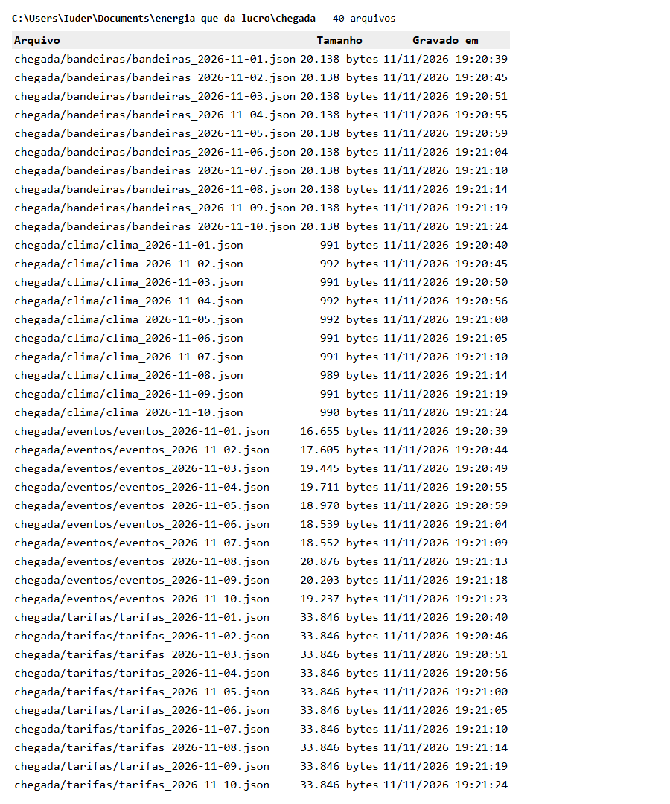
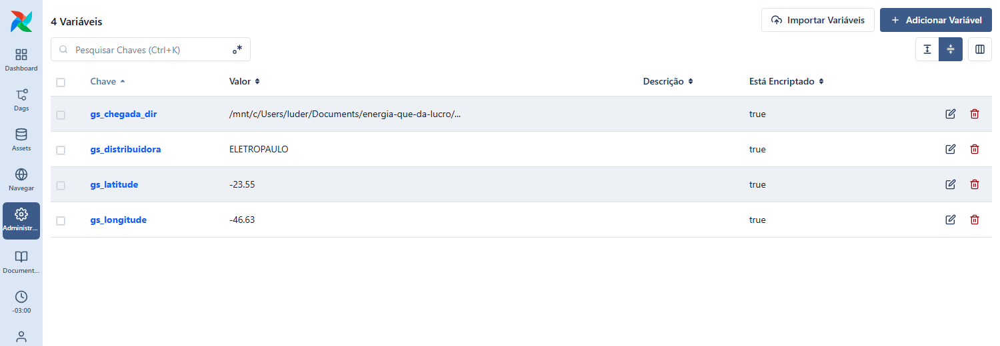
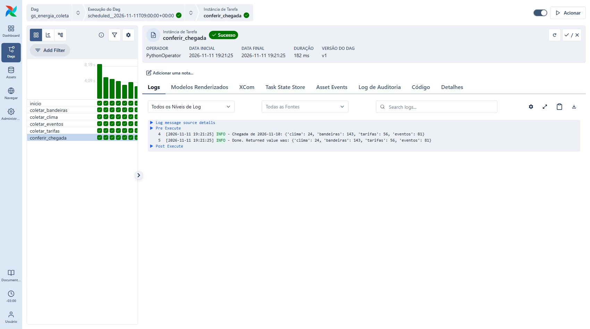
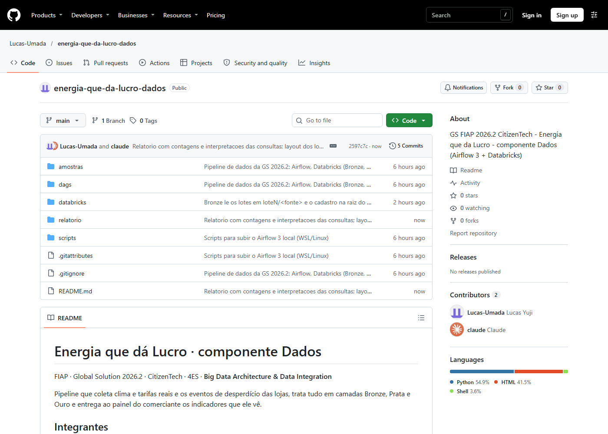
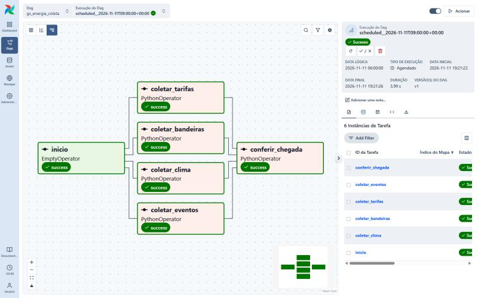
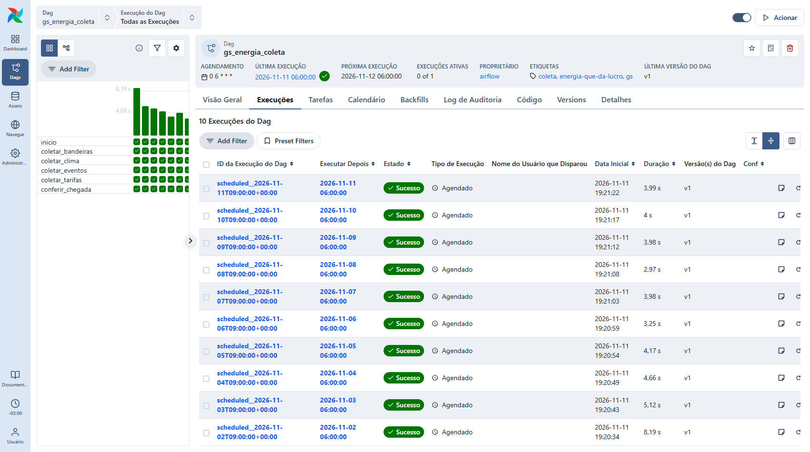

relatorio/prints/ com o nome indicado no quadro tracejado. Ele aparece no lugar ao recarregar a página.Relatório de Big Data Architecture & Data Integration
| Nome completo | RM |
|---|---|
| Nome completo 1 | RM |
| Nome completo 2 | RM |
| Nome completo 3 | RM |
| Nome completo 4 | RM |
| Nome completo 5 | RM |
Energia que dá Lucro mostra ao pequeno comerciante de bairro, em reais, a energia que a loja desperdiça (geladeira aberta, luz acesa sem necessidade), avisa na hora em que isso acontece e sugere o que fazer.
Com os dados deste pipeline, o painel responde ao comerciante:
| Campo | Conteúdo |
|---|---|
| Nome do produto | Energia que dá Lucro (confirmar nome definitivo) |
| Cidadão e território | Donos e funcionários de pequenos comércios de bairro (mercadinhos, padarias, açougues, lojas) em cidades brasileiras. |
| Problema, em uma frase | O pequeno comerciante paga caro de energia sem saber quais hábitos e equipamentos causam o desperdício. |
| Proposta de valor | Mostrar o desperdício em reais, avisar na hora em que ele acontece e sugerir ações simples, usando as câmeras que a loja já tem. |
| Arquitetura: componentes | Detecção por câmera (Visão) · robô com sensores (Físico) · API e painel do comerciante (Produção) · pipeline de dados (Dados) · consultor de eficiência com LLM local (Inteligência) · alertas e resumos automáticos (Automação) · modelo de negócio (Pitch). |
| Fontes de dados | Clima (Open-Meteo) · bandeiras tarifárias e tarifas homologadas (dados abertos da ANEEL) · eventos das lojas (simulados, com geração documentada). |
| Modelos de IA utilizados | YOLO treinado para portas de refrigeração abertas · LLM local com base de conhecimento (RAG) · IA embarcada no robô. |
| URL do MVP e repositório | URL pública do painel · link do repositório principal |
| Indicadores de impacto | R$ e kWh de desperdício evitados por loja ao mês · tempo médio de porta aberta · percentual de alertas resolvidos em poucos minutos · número de lojas ativas. |
| ODS conectados | ODS 9, 11 e 13 (incluir 7 e 12 se o professor confirmar). Menos energia desperdiçada no comércio de bairro reduz custos de quem sustenta a economia local (11), leva monitoramento inteligente a quem não tinha acesso (9) e diminui emissões associadas à geração (13). |
O Databricks Free Edition não se conecta ao Airflow nem ao painel. Os arquivos de chegada/ sobem ao Volume pela interface, e a visão vw_painel_indicadores da Ouro é exportada em CSV, que o painel carrega.
| Fonte | Origem | Formato | Frequência de coleta |
|---|---|---|---|
| Clima por hora (temperatura e umidade) | Open-Meteo, API pública sem chave (api.open-meteo.com/v1/forecast). Externa e real. | JSON com listas paralelas | Diária, 24 horas por arquivo |
| Bandeira tarifária acionada e adicional | ANEEL dados abertos, conjunto "Bandeiras Tarifárias", via API CKAN. Externa e real. | JSON Lines | Diária (a base é atualizada mensalmente) |
| Tarifa de aplicação B3 convencional | ANEEL dados abertos, conjunto "Tarifas de aplicação das distribuidoras", via API CKAN. Externa e real. | JSON Lines | Diária (muda no reajuste anual) |
| Eventos de desperdício das lojas | Simulador próprio (dags/simulador_eventos.py), no contrato de dados do grupo. Simulado. | JSON Lines | Diária |
| Cadastro de lojas e equipamentos | Arquivo fictício do grupo. | CSV | Carga única |
Quatro fontes do problema: três externas e reais (Open-Meteo e dois conjuntos da ANEEL) e uma simulada (eventos das lojas). O clima explica a carga de refrigeração; a tarifa e a bandeira transformam kWh em reais; os eventos são o desperdício em si.
O DAG gs_energia_coleta roda todo dia às 06h (schedule="0 6 * * *", fuso de Brasília) e coleta o dia anterior. Cada coleta grava um arquivo com a data no nome, por exemplo chegada/clima/clima_2026-11-08.json.

As tarefas coletar_clima, coletar_bandeiras, coletar_tarifas e coletar_eventos rodam em paralelo. A tarefa conferir_chegada verifica se os quatro arquivos do dia existem, não estão vazios e são JSON válido; se não, falha a execução. A configuração fica em Airflow Variables. Nenhuma das fontes exige chave de API; não há segredo no código nem no repositório.


Os arquivos foram enviados ao Volume workspace.energia_lucro.chegada em 2 lotes: o 1º com os dias 01/11 a 05/11 e o 2º com os dias 06/11 a 12/11.


As quatro fontes entram por Auto Loader (cloudFiles, trigger(availableNow=True)), com checkpoint no Volume; o cadastro entra por COPY INTO. A Bronze guarda o dado bruto mais arquivo_origem e carregado_em. As contagens estão na seção 07.

Tipos convertidos com try_cast e try_to_timestamp; nulos e inválidos são barrados ou recalculados (custo nulo é refeito pela fórmula do contrato). O MERGE usa a chave de cada tabela (id nos eventos). Regras de qualidade dos eventos e total barrado na última execução:
| Regra | Descrição | Total avaliado | Total barrado |
|---|---|---|---|
| R1 | Duração nula, menor ou igual a zero ou acima de 4 horas | n | n |
| R2 | Loja ou equipamento fora do cadastro | n | n |
| R3 | Início inválido ou no futuro | n | n |
| R0, R4, D1 | Id nulo · tipo ou origem fora do contrato · id repetido | n | n |


Uma fato e três dimensões: fato_desperdicio (um evento por linha), dim_loja, dim_equipamento e dim_tempo (com a bandeira e o clima do dia). As cinco consultas estão na seção 08.

O único dado pessoal do produto é o cadastro do responsável pela loja. Na dim_loja, nome, e-mail e telefone aparecem só mascarados, e o e-mail também como hash SHA-256 com sal (o sal não é versionado). Nenhuma imagem de câmera é armazenada. O cadastro usado é fictício.

O MVP usa a visão vw_painel_indicadores (desperdício por loja, equipamento e dia), exportada em CSV pelo notebook 05. O painel carrega o arquivo na tela de indicadores. A visão não tem dado pessoal.

Repositório com dags/, databricks/, amostras/ e README.md (integrantes, Ficha Técnica, arquitetura e passo a passo). Sem chaves, senhas ou dados pessoais reais.



Linhas em cada tabela Bronze em três momentos. A 3ª coluna de execução prova que rodar de novo sem arquivo novo não insere nada.
| Tabela | Antes do 1º lote | Depois do 1º lote | Depois do 2º lote | Depois da 2ª execução sem arquivo novo |
|---|---|---|---|---|
| bronze_eventos | 0 | n | n | igual |
| bronze_clima | 0 | n | n | igual |
| bronze_bandeiras | 0 | n | n | igual |
| bronze_tarifas | 0 | n | n | igual |


SELECT l.loja_id, t.periodo, count(*) AS eventos, count(DISTINCT t.data) AS dias_com_dados,
round(sum(f.kwh_desperdicado), 2) AS kwh_desperdicado,
round(sum(f.custo_estimado_rs), 2) AS custo_estimado_rs,
round(sum(f.custo_aneel_rs), 2) AS custo_aneel_rs,
round(sum(f.custo_estimado_rs) / count(DISTINCT t.data) * 30, 2) AS projecao_rs_30_dias
FROM fato_desperdicio f
JOIN dim_loja l ON l.loja_sk = f.loja_sk
JOIN dim_tempo t ON t.data_id = f.data_id
GROUP BY l.loja_id, t.periodo
ORDER BY t.periodo, custo_estimado_rs DESC;

Interpretação: escrever a partir do resultado: qual loja desperdiça mais, quanto em R$ e kWh no período e a projeção para 30 dias. Comentar a diferença entre o custo pela tarifa provisória do grupo (R$ 0,90/kWh) e pela tarifa homologada da ANEEL sem tributos.
SELECT l.loja_id, q.equipamento_id, q.categoria, count(*) AS eventos,
round(avg(f.duracao_s), 0) AS duracao_media_s,
round(100 * avg(CASE WHEN f.acima_limite_alerta THEN 1 ELSE 0 END), 1) AS pct_acima_de_60s,
round(sum(f.kwh_desperdicado), 2) AS kwh_desperdicado,
round(sum(f.custo_estimado_rs), 2) AS custo_estimado_rs,
round(100 * sum(f.custo_estimado_rs)
/ sum(sum(f.custo_estimado_rs)) OVER (PARTITION BY l.loja_id), 1) AS pct_do_custo_da_loja
FROM fato_desperdicio f
JOIN dim_loja l ON l.loja_sk = f.loja_sk
JOIN dim_equipamento q ON q.equipamento_sk = f.equipamento_sk
GROUP BY l.loja_id, q.equipamento_id, q.categoria
ORDER BY l.loja_id, custo_estimado_rs DESC;

Interpretação: escrever a partir do resultado: qual equipamento concentra o custo em cada loja, e se o peso vem de muitos eventos curtos (refrigeração) ou de poucos eventos longos (iluminação). Indicar onde o comerciante deve agir primeiro.
SELECT f.hora, count(*) AS eventos,
count_if(f.tipo = 'porta_aberta') AS portas_abertas,
count_if(f.tipo = 'luz_acesa_sem_necessidade') AS luzes_acesas,
round(sum(f.kwh_desperdicado), 2) AS kwh_desperdicado,
round(sum(f.custo_estimado_rs), 2) AS custo_estimado_rs,
round(100 * sum(f.custo_estimado_rs) / sum(sum(f.custo_estimado_rs)) OVER (), 1) AS pct_do_custo_total
FROM fato_desperdicio f
GROUP BY f.hora
ORDER BY f.hora;

Interpretação: escrever a partir do resultado: faixa de horas com mais portas abertas, e o peso das luzes acesas depois do fechamento (20h e 21h). Relacionar com a ação: reforçar a atenção no pico e desligar a iluminação ao fechar.
WITH horas AS (
SELECT data_hora, temperatura_c,
CASE WHEN temperatura_c < 18 THEN '1) abaixo de 18 °C'
WHEN temperatura_c < 22 THEN '2) 18 a 21,9 °C'
WHEN temperatura_c < 26 THEN '3) 22 a 25,9 °C'
WHEN temperatura_c < 30 THEN '4) 26 a 29,9 °C'
ELSE '5) 30 °C ou mais' END AS faixa_temperatura
FROM prata_clima
WHERE hour(data_hora) BETWEEN 7 AND 19
AND to_date(data_hora) IN (SELECT data FROM dim_tempo)
)
SELECT h.faixa_temperatura,
count(DISTINCT h.data_hora) AS horas_observadas,
count(f.evento_id) AS portas_abertas,
round(count(f.evento_id) / count(DISTINCT h.data_hora), 2) AS eventos_por_hora,
round(avg(f.duracao_s), 0) AS duracao_media_s,
round(sum(f.kwh_desperdicado) / count(DISTINCT h.data_hora), 4) AS kwh_por_hora
FROM horas h
LEFT JOIN fato_desperdicio f ON f.hora_referencia = h.data_hora AND f.tipo = 'porta_aberta'
GROUP BY h.faixa_temperatura
ORDER BY h.faixa_temperatura;

Interpretação: escrever a partir do resultado: como eventos_por_hora varia entre as faixas de temperatura. A temperatura é real (Open-Meteo). Nos eventos simulados, as aberturas seguem um perfil horário com pico às 14h, que também é a hora mais quente; por isso a relação observada é a hipótese a validar com eventos reais, e não uma medição.
WITH diario AS (
SELECT l.loja_id, t.data, f.fase_alertas,
sum(f.custo_estimado_rs) AS rs_dia,
sum(f.kwh_desperdicado) AS kwh_dia,
avg(CASE WHEN f.tipo = 'porta_aberta' THEN f.duracao_s END) AS porta_media_s
FROM fato_desperdicio f
JOIN dim_loja l ON l.loja_sk = f.loja_sk
JOIN dim_tempo t ON t.data_id = f.data_id
GROUP BY l.loja_id, t.data, f.fase_alertas
)
SELECT loja_id,
round(avg(CASE WHEN fase_alertas = 'antes' THEN rs_dia END), 4) AS rs_dia_antes,
round(avg(CASE WHEN fase_alertas = 'depois' THEN rs_dia END), 4) AS rs_dia_depois,
round(100 * (1 - avg(CASE WHEN fase_alertas = 'depois' THEN rs_dia END)
/ avg(CASE WHEN fase_alertas = 'antes' THEN rs_dia END)), 1) AS reducao_pct,
round(30 * (avg(CASE WHEN fase_alertas = 'antes' THEN rs_dia END)
- avg(CASE WHEN fase_alertas = 'depois' THEN rs_dia END)), 2) AS rs_evitados_em_30_dias,
round(30 * (avg(CASE WHEN fase_alertas = 'antes' THEN kwh_dia END)
- avg(CASE WHEN fase_alertas = 'depois' THEN kwh_dia END)), 2) AS kwh_evitados_em_30_dias,
round(avg(CASE WHEN fase_alertas = 'antes' THEN porta_media_s END), 0) AS porta_media_s_antes,
round(avg(CASE WHEN fase_alertas = 'depois' THEN porta_media_s END), 0) AS porta_media_s_depois
FROM diario
GROUP BY loja_id
ORDER BY loja_id;
(Versão resumida; a consulta completa, com dias em cada fase e percentual de portas fechadas em até 2 minutos, está em databricks/04_consultas.sql.)

Interpretação: escrever a partir do resultado: redução percentual, R$ e kWh evitados em 30 dias por loja e queda no tempo médio de porta aberta. Esta consulta calcula os indicadores de impacto da Ficha Técnica. Com dados simulados, a redução decorre da hipótese de que 70% dos alertas são atendidos em até 60 segundos; a mesma consulta mede o impacto real quando houver lojas piloto.
O pipeline cobre o caminho completo: coleta diária orquestrada no Airflow 3, com quatro tarefas em paralelo e conferência dos arquivos; ingestão incremental e idempotente na Bronze por Auto Loader e COPY INTO; Prata com tipagem, regras de qualidade contabilizadas e MERGE pela chave; e Ouro dimensional, com dados pessoais protegidos, de onde sai o CSV que o painel exibe.
Decisões que valem registro: (1) a coleta usa o dia anterior ao disparo, calculado no fuso de Brasília, porque no Airflow 3 a data lógica de um DAG com cron é o instante do disparo; (2) a Bronze fica em texto e a tipagem acontece na Prata, para que registro defeituoso seja barrado com motivo em vez de quebrar a carga; (3) o custo é guardado de duas formas, pela tarifa provisória do contrato do grupo e pela tarifa B3 homologada da ANEEL mais a bandeira do mês, sem tributos.
Limitações: os eventos das lojas são simulados, e os parâmetros de potência e perda são estimativas do grupo. Acrescentar o que foi observado na execução: volumes, tempo de carga, dificuldades encontradas. Próximo passo: substituir o simulador pelos eventos reais da detecção por câmera e do robô, que já usam o mesmo contrato de dados.
Repositório: https://github.com/usuario/repositorio